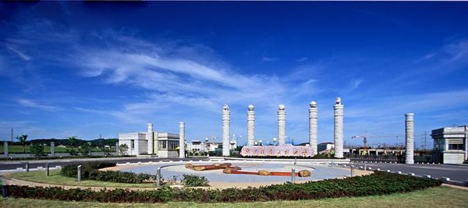
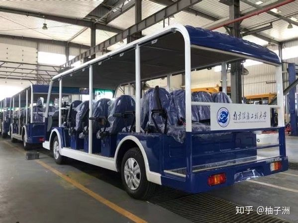
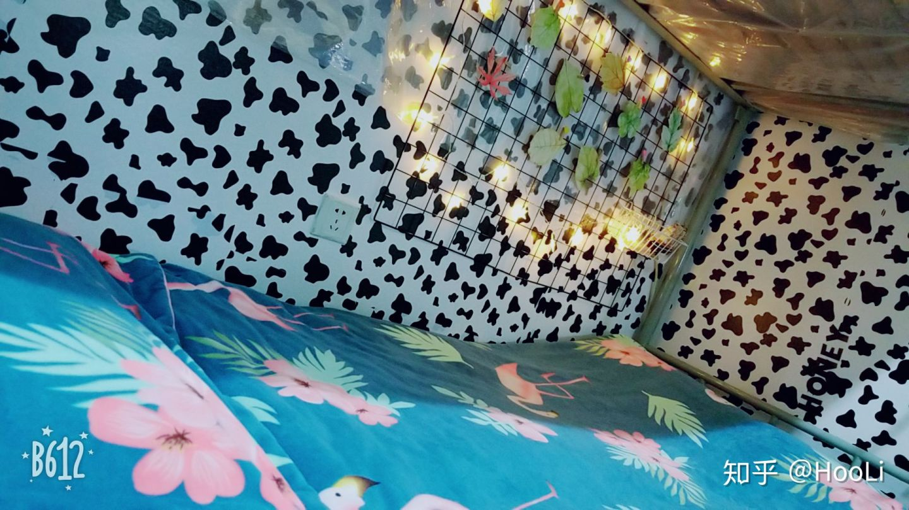
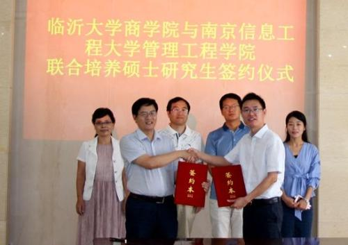

宋文静
个人信息>
微查询
信息公告
一周会议
天际新闻
我的邮件
我的课表
学术报告
空闲教室
通讯录
我的成绩
微论坛
在南京信息工程大学就读是什么体验？
李若柳
哈哈哈哈，作为南信大学子，我要骄傲的回答这个问题，因为我们学校真的是很难得一遇的好学校，怎么说呢？就打个比方吧，大一上学期寒假回家，七大姑八大姨家的儿子姑娘都各种抱怨，自己大学的多不好多不好呀，就我一个人觉得过的可是相当舒心快乐了，来南信大买不了吃亏买不了上当，你只会收获一个美好的四年大学生活。

509 赞同 · 34 评论
南京信息工程大学的食宿条件如何？
李洋
据说今年要供暖了，住宿大部分4人独卫，吃饭还可以，南信大还是很好的，欢迎你。

219 赞同 · 20 评论
南京信息工程大学大学在双一流里是什么档次？就业率如何？
刘仁辉
在双一流的档次里，我感觉，比一般211差，比大部分一本好。不知道我这个专业是不是热门专业，电信类的，但是我感觉，强的人什么工作都好找，菜的人什么工作都找不到，就酱。

156 赞同 · 17 评论